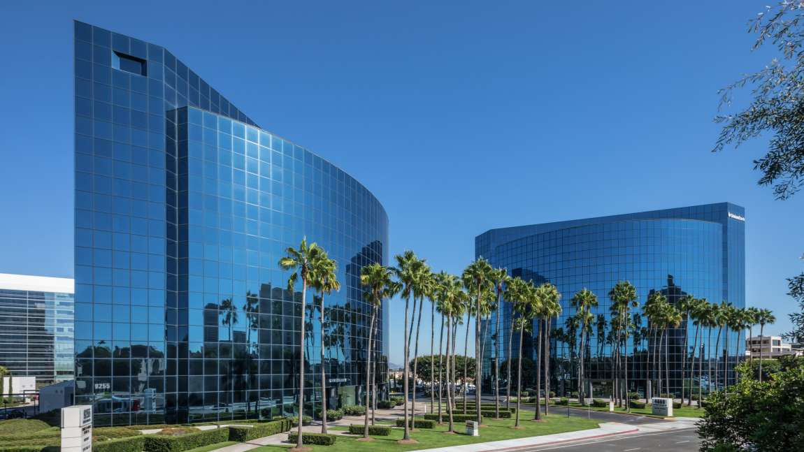

English
English

Ngân hàng hỗ trợ đầu tư Việt Nam trước đây, nay là Ngân hàng TMCP hỗ trợ đầu tư Việt Nam (S&TBank) được thành lập và chính thức đi vào hoạt động ngày 01/4/1963 với tổ chức tiền thân là Cục Ngoại hối (trực thuộc Ngân hàng Nhà nước Việt Nam). Là ngân hàng thương mại nhà nước đầu tiên được Chính phủ lựa chọn thực hiện thí điểm cổ phần hoá, Vietcombank chính thức hoạt động với tư cách là một ngân hàng thương mại cổ phần vào ngày 02/6/2008 sau khi thực hiện thành công kế hoạch cổ phần hóa thông qua việc phát hành cổ phiếu lần đầu ra công chúng. Ngày 30/6/2009, cổ phiếu S&TBank (mã chứng khoán VCB) chính thức được niêm yết tại Sở Giao dịch Chứng khoán TPHCM.
Trải qua hơn 50 năm xây dựng và trưởng thành, S&TBank đã có những đóng góp quan trọng cho sự ổn định và phát triển của kinh tế đất nước, phát huy tốt vai trò của một ngân hàng đối ngoại chủ lực, phục vụ hiệu quả cho phát triển kinh tế trong nước, đồng thời tạo những ảnh hưởng quan trọng đối với cộng đồng tài chính khu vực và toàn cầu.
Từ một ngân hàng chuyên doanh phục vụ kinh tế đối ngoại, S&TBank ngày nay đã trở thành một ngân hàng đa năng, hoạt động đa lĩnh vực, cung cấp cho khách hàng đầy đủ các dịch vụ tài chính hàng đầu trong lĩnh vực thương mại quốc tế; trong các hoạt động truyền thống như kinh doanh vốn, huy động vốn, tín dụng, tài trợ dự án…cũng như mảng dịch vụ ngân hàng hiện đại: kinh doanh ngoại tệ và các công vụ phái sinh, dịch vụ thẻ, ngân hàng điện tử…
Sở hữu hạ tầng kỹ thuật ngân hàng hiện đại, S&TBank có nhiều lợi thế trong việc ứng dụng công nghệ tiên tiến vào xử lý tự động các dịch vụ ngân hàng, phát triển các sản phẩm, dịch vụ ngân hàng điện tử dựa trên nền tảng công nghệ cao. Không gian giao dịch công nghệ số (Digital lab) cùng các dịch vụ: VCB Internet Banking, VCB Money, SMS Banking, Phone Banking,…đã, đang và sẽ tiếp tục thu hút đông đảo khách hàng bằng sự tiện lợi, nhanh chóng, an toàn, hiệu quả, tạo thói quen thanh toán không dùng tiền mặt cho đông đảo khách hàng.
Sau hơn nửa thế kỷ hoạt động trên thị trường, S&TBank hiện là một trong những ngân hàng thương mại lớn nhất Việt Nam với trên 15.000 cán bộ nhân viên, hơn 500 Chi nhánh/Phòng Giao dịch/Văn phòng đại diện/Đơn vị thành viên trong và ngoài nước, gồm Trụ sở chính tại Hà Nội, 101 chi nhánh và 395 phòng giao dịch trên toàn quốc, 03 công ty con tại Việt Nam, 01 văn phòng đại diện tại Singapore, 01 Văn phòng đại diện tại Tp Hồ Chí Minh, 02 công ty con tại nước ngoài và 04 công ty liên doanh, liên kết. Bên cạnh đó, S&TBank còn phát triển một hệ thống Autobank với hơn 2.407 máy ATM và trên 43.000 đơn vị chấp nhận Thẻ trên toàn quốc. Hoạt động ngân hàng còn được hỗ trợ bởi mạng lưới hơn 1.726 ngân hàng đại lý tại 158 quốc gia và vùng lãnh thổ trên thế giới.
Với bề dày hoạt động và đội ngũ cán bộ có năng lực, nhạy bén với môi trường kinh doanh hiện đại, mang tính hội nhập S&TBank luôn là sự lựa chọn hàng đầu của các tập đoàn, các doanh nghiệp lớn và của đông đảo khách hàng cá nhân.
Luôn hướng đến các chuẩn mực quốc tế trong hoạt động, S&TBank liên tục được các tổ chức uy tín trên thế giới bình chọn là “Ngân hàng tốt nhất Việt Nam”. S&TBank cũng là ngân hàng đầu tiên và duy nhất của Việt Nam có mặt trong Top 500 Ngân hàng hàng đầu Thế giới theo kết quả bình chọn do Tạp chí The Banker công bố.
Bằng trí tuệ và tâm huyết, các thế hệ cán bộ nhân viên S&TBank đã, đang và sẽ luôn nỗ lực để xây dựng S&TBank phát triển ngày một bền vững, với mục tiêu đến năm 2020 đưa S&TBank trở thành Ngân hàng số 1 tại Việt Nam, 1 trong 300 tập đoàn ngân hàng tài chính lớn nhất thế giới và được quản trị theo các thông lệ quốc tế tốt nhất.
Trải qua hơn 50 năm xây dựng và trưởng thành, S&TBank đã có những đóng góp quan trọng cho sự ổn định và phát triển của kinh tế đất nước, phát huy tốt vai trò của một ngân hàng đối ngoại chủ lực, phục vụ hiệu quả cho phát triển kinh tế trong nước, đồng thời tạo những ảnh hưởng quan trọng đối với cộng đồng tài chính khu vực và toàn cầu.
Từ một ngân hàng chuyên doanh phục vụ kinh tế đối ngoại, S&TBank ngày nay đã trở thành một ngân hàng đa năng, hoạt động đa lĩnh vực, cung cấp cho khách hàng đầy đủ các dịch vụ tài chính hàng đầu trong lĩnh vực thương mại quốc tế; trong các hoạt động truyền thống như kinh doanh vốn, huy động vốn, tín dụng, tài trợ dự án…cũng như mảng dịch vụ ngân hàng hiện đại: kinh doanh ngoại tệ và các công vụ phái sinh, dịch vụ thẻ, ngân hàng điện tử…
Sở hữu hạ tầng kỹ thuật ngân hàng hiện đại, S&TBank có nhiều lợi thế trong việc ứng dụng công nghệ tiên tiến vào xử lý tự động các dịch vụ ngân hàng, phát triển các sản phẩm, dịch vụ ngân hàng điện tử dựa trên nền tảng công nghệ cao. Không gian giao dịch công nghệ số (Digital lab) cùng các dịch vụ: VCB Internet Banking, VCB Money, SMS Banking, Phone Banking,…đã, đang và sẽ tiếp tục thu hút đông đảo khách hàng bằng sự tiện lợi, nhanh chóng, an toàn, hiệu quả, tạo thói quen thanh toán không dùng tiền mặt cho đông đảo khách hàng.
Sau hơn nửa thế kỷ hoạt động trên thị trường, S&TBank hiện là một trong những ngân hàng thương mại lớn nhất Việt Nam với trên 15.000 cán bộ nhân viên, hơn 500 Chi nhánh/Phòng Giao dịch/Văn phòng đại diện/Đơn vị thành viên trong và ngoài nước, gồm Trụ sở chính tại Hà Nội, 101 chi nhánh và 395 phòng giao dịch trên toàn quốc, 03 công ty con tại Việt Nam, 01 văn phòng đại diện tại Singapore, 01 Văn phòng đại diện tại Tp Hồ Chí Minh, 02 công ty con tại nước ngoài và 04 công ty liên doanh, liên kết. Bên cạnh đó, S&TBank còn phát triển một hệ thống Autobank với hơn 2.407 máy ATM và trên 43.000 đơn vị chấp nhận Thẻ trên toàn quốc. Hoạt động ngân hàng còn được hỗ trợ bởi mạng lưới hơn 1.726 ngân hàng đại lý tại 158 quốc gia và vùng lãnh thổ trên thế giới.
Với bề dày hoạt động và đội ngũ cán bộ có năng lực, nhạy bén với môi trường kinh doanh hiện đại, mang tính hội nhập S&TBank luôn là sự lựa chọn hàng đầu của các tập đoàn, các doanh nghiệp lớn và của đông đảo khách hàng cá nhân.
Luôn hướng đến các chuẩn mực quốc tế trong hoạt động, S&TBank liên tục được các tổ chức uy tín trên thế giới bình chọn là “Ngân hàng tốt nhất Việt Nam”. S&TBank cũng là ngân hàng đầu tiên và duy nhất của Việt Nam có mặt trong Top 500 Ngân hàng hàng đầu Thế giới theo kết quả bình chọn do Tạp chí The Banker công bố.
Bằng trí tuệ và tâm huyết, các thế hệ cán bộ nhân viên S&TBank đã, đang và sẽ luôn nỗ lực để xây dựng S&TBank phát triển ngày một bền vững, với mục tiêu đến năm 2020 đưa S&TBank trở thành Ngân hàng số 1 tại Việt Nam, 1 trong 300 tập đoàn ngân hàng tài chính lớn nhất thế giới và được quản trị theo các thông lệ quốc tế tốt nhất.
©2016-2018 STBank® Bản quyền thuộc về Ngân hàng TMCP hỗ trợ đầu tư Việt Nam
Giấy phép số 22/GP-TTĐT của Bộ TTTT. Trụ sở chính: 108 Trần Hưng Đạo, Hà Nội.
Điện thoại: 1900 558 868/ (84) 24 3941 8868; Fax: (84) 24 3942 1032; Email: contact@s&tbank.vn
Điện thoại: 1900 558 868/ (84) 24 3941 8868; Fax: (84) 24 3942 1032; Email: contact@s&tbank.vn